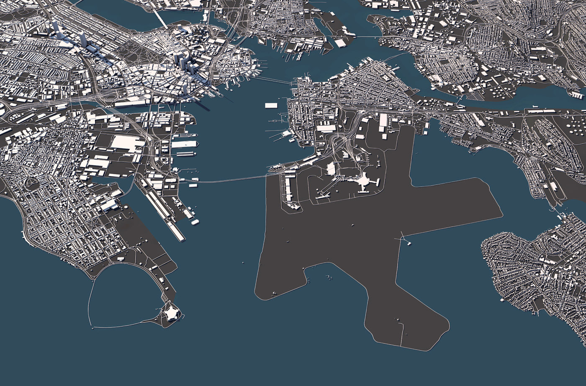
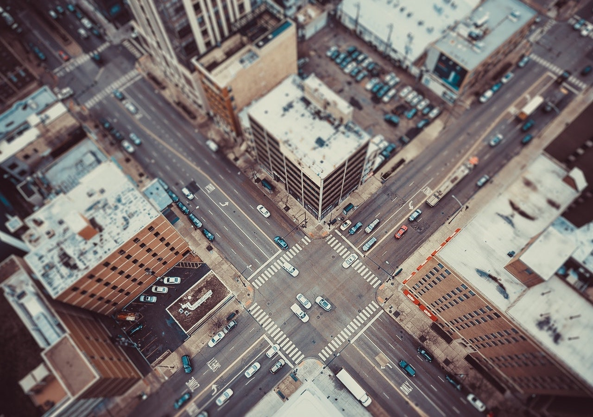

Gallery Blog
Here you can find interactive content about our scientific findings!
Posts

Transition Matrix
We introduce a novel traffic control strategy that applies Markovian traffic assignment framework to dynamic traffic assignment...

On-ramp Shockwave Dissipation
In this work, we demonstrate the ability of shockwave dissipation, previously demonstrated on a ring to scale to a highway situation ...
Bottleneck Control
Inspired by the rapid decrease in lanes on the San Francisco-Oakland Bay Bridge, we study ...

Ring Shockwave Dissipation
In this work, inspired by the Sugiyama experiment demonstrating spontaneous formation of traffic shockwaves, and....

Intersection control
In this work, we demonstrated the ability of a single autonomous vehicle to control the relative ...
Impact of Sorting
In this work, we study ...